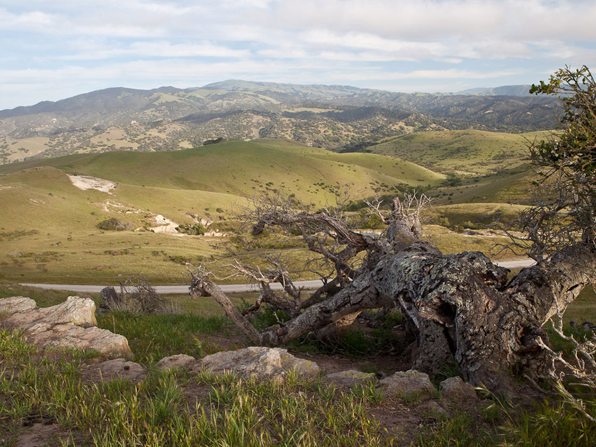

.jpg){kind=link}
Former United States Army post on Monterey Bay of the Pacific Ocean coast
General Information
Some areas may be temporarily closed for safety or maintenance
No permit required for hiking, biking, or horseback riding
Special Recreation Permits may be required for organized events
Off-Leash Opportunity Routes (OLORs) allow dogs off-leash under strict conditions:
Must remain within 50 feet of owner and leashed within 100 feet of others
Owners must carry a leash, clean up waste, and never leave pets unattended
Spring offers wildflowers and mild temperatures
Fall provides clear skies and fewer crowds
How to Get There
From Monterey, CA (18 mi): Take CA-1 N to Lightfighter Dr, then turn right onto General Jim Moore Blvd and follow signs to Fort Ord National Monument trailheads.
Overview
Fort Ord National Monument is a former Army base on Monterey Bay that is now a network of public lands managed by the Bureau of Land Management. Fort Ord closed as a military post in 1994, and President Barack Obama designated about 14,650 acres of it as a national monument in April 2012 to protect its oak woodlands, grasslands and maritime chaparral, which shelter rare species such as the endangered Smith’s blue butterfly and the threatened California tiger salamander. Its open hills, wetlands and spring wildflowers are close to Monterey, Seaside and Salinas, and the monument is best known for its many miles of trails used by hikers, mountain bikers and horseback riders. Some areas still contain unexploded ordnance from the base’s days as a training ground, so visitors are asked to stay on designated trails.
Access
The monument lies between Monterey and Salinas along Highway 68, and its trailheads are reached from several different entrances rather than a single gate. Popular trailheads include Creekside Terrace, just off Highway 68 near the Reservation Road and Portola Road intersection, and Badger Hills, also off Highway 68 about six miles east of Salinas. Other entrances are on the Marina side near General Jim Moore Boulevard and Gigling Road. Most trailheads have parking lots without services, so bring water and check the BLM website for current closures before heading out. The monument is open during daylight hours only, and entrance is free.
Seasons
Spring is the favorite season, when the grasslands turn green and wildflowers bloom and the weather is mild. Summers are generally dry, with cool, foggy mornings near the coast and warmer, sunnier conditions inland and on the higher ridges. Fall tends to bring clear skies and fewer crowds, and winter rain can make dirt trails muddy and slick, so mountain bikers in particular are asked to avoid riding on wet trails. Wildfire danger is highest in late summer and fall, and areas of the monument can close temporarily for fire or safety reasons.
Things to Do
Explore One of California's Largest Protected Open Spaces
Fort Ord National Monument encompasses more than 14,000 acres of protected public land along California's Central Coast near Monterey Bay. Established in 2012 on former military training lands, the monument preserves rolling grasslands, oak woodlands, chaparral-covered hills, rare plant communities, and an extensive trail network that attracts hikers, cyclists, equestrians, and wildlife enthusiasts.
Experience World-Class Mountain Biking
Fort Ord National Monument is widely recognized as one of the premier mountain biking destinations in California. The monument contains more than 80 miles of trails ranging from beginner-friendly routes to technical singletrack, providing opportunities for riders of all skill levels to explore the area's diverse landscapes.
Discover Unique Wildlife and Rare Habitats
The monument protects habitat for numerous species, including mule deer, coyotes, bobcats, red-tailed hawks, golden eagles, and the federally threatened California tiger salamander. Seasonal wildflowers and native grasslands create colorful displays and support a rich variety of wildlife throughout the year.
Enjoy Scenic Views of Monterey Bay and the Salinas Valley
Many of the monument's ridgelines and elevated trails offer sweeping views of Monterey Bay, the Salinas Valley, the Santa Lucia Mountains, and surrounding Central Coast landscapes. Clear days provide excellent opportunities for sightseeing and photography.
Learn About the Area's Military History
For much of the twentieth century, Fort Ord served as a major U.S. Army training facility. Today, visitors can learn about the area's military heritage while exploring lands that have been transformed into a nationally protected conservation and recreation area.
Enjoy Hiking, Horseback Riding, and Nature Photography
Fort Ord National Monument is popular for hiking, trail running, horseback riding, birdwatching, and landscape photography. The monument's extensive trail system allows visitors to experience quiet natural settings while exploring one of California's most successful land conservation projects.
Top Trails
Creekside Terrace Trail
Length: Approximately 4 miles round trip
Elevation Gain: Moderate
Difficulty: Easy to Moderate
This popular trail traverses rolling hills, open grasslands, and scenic overlooks while providing opportunities to observe wildlife and seasonal wildflowers. It serves as an excellent introduction to the monument's natural landscapes.
Trail 68 and Trail 69 Loop
Length: Approximately 5 miles loop
Elevation Gain: Moderate
Difficulty: Moderate
A favorite among hikers and mountain bikers, this route combines flowing trail segments with panoramic viewpoints overlooking the surrounding hills and valleys.
Badger Hills Trail
Length: Approximately 6 miles round trip
Elevation Gain: Significant
Difficulty: Moderate to Difficult
This scenic trail climbs into higher elevations of the monument and rewards visitors with expansive views of Monterey Bay, Fort Ord's grasslands, and the surrounding Central Coast region.
Frog Pond Wetland Trail
Length: Approximately 2 miles round trip
Elevation Gain: Minimal
Difficulty: Easy
This family-friendly trail passes near seasonal wetlands and habitat restoration areas, offering opportunities for birdwatching, wildlife observation, and learning about the monument's conservation efforts.
Visitor Centers
Fort Ord National Monument does not have a staffed visitor center or entrance station, and information is provided through trailhead kiosks and maps. The monument is managed by the BLM Central Coast Field Office, which can answer questions about trail conditions and closures by phone at 831-582-2200, and the BLM website carries current maps, alerts and trail guides. Local bike shops and visitor bureaus in Monterey and Marina can also help with route suggestions.
Camping and Lodging
There are no campgrounds in the monument, and overnight camping is not offered, so visitors stay in nearby communities. Hotels, motels and inns are plentiful in Monterey, Seaside and Marina, only 10 to 20 minutes away, while Carmel-by-the-Sea and Pacific Grove offer more upscale inns and bed-and-breakfasts within about 30 minutes. Salinas to the east has additional, often more affordable, hotels. For camping, state and county campgrounds in the Monterey Bay region are within about an hour’s drive.
This article uses material from the Wikipedia article "Fort Ord", which is released under the Creative Commons Attribution-Share-Alike License 3.0. Additional information from the Bureau of Land Management.

.jpg){kind=link}